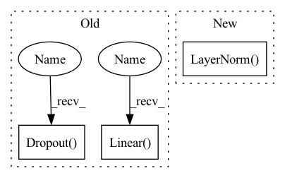

Pattern ID :2147

Before Change
self.to_qkv = nn.Linear(dim, inner_dim * 3, bias=False)
self.to_out = nn.Sequential(
nn.Linear(inner_dim, dim),
nn.Dropout(dropout)
) if project_out else nn.Identity()
def forward(self, x):
After Change
channel_mlp = token_channels
self.AddPosEmb2Value = AddPosEmb2Value
self.norm1 = nn.LayerNorm(token_channels)
self.Attention = MultiHeadAttention(token_channels, heads, dim_head, dropout)
self.norm2 = nn.LayerNorm(token_channels)
self.FFN = FeedForward(token_channels, channel_mlp, dropout=dropout)
In pattern: SUPERPATTERN
Frequency: 3
Non-data size: 3
Instances
Fragment ID: 5005845
Project Name: wamawama/wama_modules
Commit Name: f6865257f4bea4ed62e0170644d99dcdb1d20c94
Time: 2022-10-28
Author: wmy19970215@gmail.com
File Name: wama_modules/Transformer.py
M Class Name: SelfAttention
N Class Name: TransformerEncoderLayer
M Method Name: __init__(7)
N Method Name: __init__(5)
M Parent Class: nn.Module
N Parent Class: nn.Module
M File Name: wama_modules/Transformer.py
N File Name: wama_modules/Transformer.py
M Start Line: 53
M End Line: 65
N Start Line: 114
N End Line: 133
'>
Before Change
self.scale = dim_head ** -0.5
self.attend = nn.Softmax(dim = -1)
self.dropout = nn.Dropout(dropout)
self.to_q = nn.Linear(dim, inner_dim, bias = False)
self.to_kv = nn.Linear(dim, inner_dim * 2, bias = False)
self.to_out = nn.Sequential(
nn.Linear(inner_dim, dim),
After Change
self.to_latent = nn.Identity()
self.linear_head = nn.Sequential(
nn.LayerNorm(dim),
nn.Linear(dim, num_classes)
)
'>
Fragment ID: 5005847
Project Name: lucidrains/vit-pytorch
Commit Name: 9a8e509b27da763eed0645183501f7582eb4132d
Time: 2023-03-07
Author: lucidrains@gmail.com
File Name: vit_pytorch/mp3.py
M Class Name: CrossAttention
N Class Name: ViT
M Method Name: __init__(1)
N Method Name: __init__(5)
M Parent Class: nn.Module
N Parent Class: nn.Module
M File Name: vit_pytorch/mp3.py
N File Name: vit_pytorch/mp3.py
M Start Line: 41
M End Line: 54
N Start Line: 109
N End Line: 133
'>
Before Change
nn.BatchNorm1d(mlp_head_dims[0]),
nn.GELU(),
nn.Dropout(dropout),
nn.Linear(mlp_head_dims[0], mlp_head_dims[1]),
nn.BatchNorm1d(mlp_head_dims[1]),
nn.GELU(),
nn.Dropout(dropout)
)
self.dropout = nn.Dropout(dropout)
self.classifier = nn.Linear(mlp_head_dims[1], num_classes)
After Change
// self.signal_encoder = SignalEncoderConv(hidden_dim, projection_dim, learnable=False)
encoder_layer = nn.TransformerEncoderLayer(d_model=hidden_dim, nhead=nheads, dropout=dropout, dim_feedforward=1024, activation="gelu")
encoder_norm = nn.LayerNorm(hidden_dim)
self.transformer = nn.TransformerEncoder(encoder_layer, num_encoder_layers, encoder_norm)
self.mlp_head = nn.Sequential(
nn.Dropout(dropout),
'>
Fragment ID: 5005843
Project Name: kolaszko/haptic_transformer
Commit Name: 480c8a6c89740a357ff79f97d11b8fde6f6e09be
Time: 2021-05-05
Author: mikolaj.lysakowski.bk@gmail.com
File Name: models/haptr.py
M Class Name: HAPTR
N Class Name: HAPTR
M Method Name: __init__(8)
N Method Name: __init__(8)
M Parent Class: nn.Module
N Parent Class: nn.Module
M File Name: models/haptr.py
N File Name: models/haptr.py
M Start Line: 8
M End Line: 28
N Start Line: 9
N End Line: 29